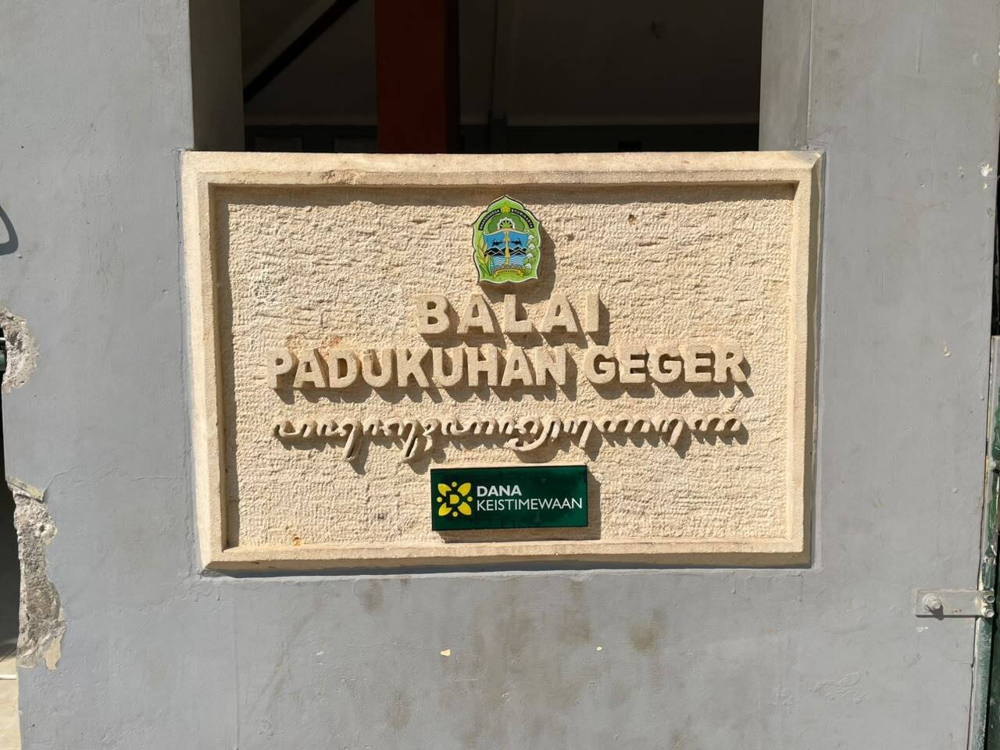
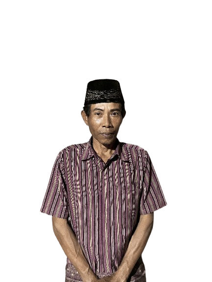
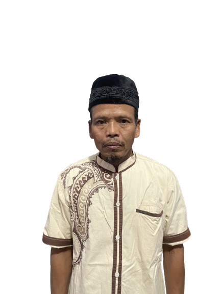
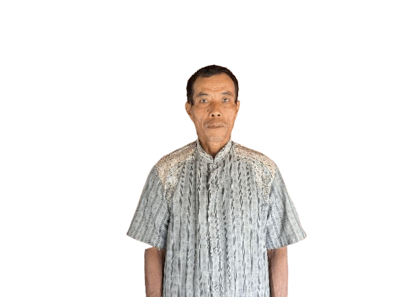

Mengenal sejarah, kondisi wilayah, serta pemerintahan Padukuhan Geger.

Padukuhan Geger merupakan salah satu padukuhan yang berada di Kalurahan Pengkol, Kapanewon Nglipar, Kabupaten Gunungkidul. Secara administratif, padukuhan ini telah menjadi bagian dari wilayah Kalurahan Pengkol sejak tahun 1912. Menurut sejarah Kalurahan Pengkol, Padukuhan Geger berasal dari wilayah Kebayan yang dipimpin oleh Kebayan Eyang Mangun Utomo sebagai dukuh pertama. Kepemimpinan kemudian dilanjutkan oleh beberapa dukuh hingga saat ini, seiring berkembangnya kehidupan masyarakat serta pembangunan di berbagai bidang. Hingga kini, Padukuhan Geger tetap mempertahankan nilai gotong royong, kebersamaan, dan budaya lokal sebagai identitas masyarakat.
Padukuhan Geger berada di wilayah Kalurahan Pengkol, Kecamatan Nglipar, Kabupaten Gunungkidul. Wilayah ini memiliki karakteristik perbukitan khas Gunungkidul dengan kondisi alam yang mendukung sektor pertanian, peternakan, serta berbagai potensi ekonomi masyarakat.
629 Jiwa
205 KK
97,81 Hektare
Pemerintah Padukuhan Geger berperan dalam penyelenggaraan pemerintahan, pelayanan masyarakat, serta pembangunan padukuhan.
Jabatan : Dukuh
TTL :Gunung Kidul, 13 Juni 1969
Masa Jabatan :1999 - sekarang
Jabatan : Ketua RW
TTL :Gunung Kidul, 16 Juni 1969
Masa Jabatan :2019 - sekarang

Jabatan : Ketua RT 01
TTL :Gunung Kidul, 8 Juni 1968
Masa Jabatan :2026
Jabatan : Ketua RT 02
TTL :Gunung Kidul, 15 Juli 1982
Masa Jabatan :2024 - sekarang
Jabatan : Ketua RT 03
TTL :Gunung Kidul, 12 Juli 1989
Masa Jabatan :2024 - sekarang
Jabatan : Ketua RT 04
TTL :Gunung Kidul, 10 Januari 1983
Masa Jabatan :2018 - sekarang

Jabatan : Ketua RT 05
TTL : Gunung Kidul, 21 April 1972
Masa Jabatan :2023 - sekarang
Jabatan : Ketua RT 06
TTL :Gunung Kidul, 20 April 1985
Masa Jabatan :2015 - sekarang
Jabatan : Ketua RT 07
TTL : Gunung Kidul, 18 Maret 1980
Masa Jabatan :2024 - sekarang

Jabatan : Ketua RT 08
TTL :Gunung Kidul, 28 Mei 1968
Masa Jabatan :2010 - sekarang